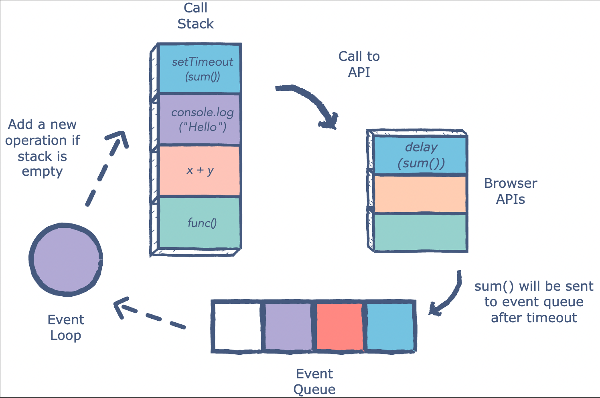

1. What is the difference between Local Storage & Session Storage?
Local Storage helps us store data on the client's computer. The data stored in local storage for lifetime unless the user manually delete it.It does not expire even when the user closes the window or tab.
It is very similar to the local storage.Still, the main difference lies in the lifespan as it persists in the browser until its current tab is on. Once you close the tab or terminate it, the data on session storage also gets lost.
2. What is the difference between Local Scope and Global Scope?
Global scope is the “root scope” which encloses all other code / scopes.In the browser it creates a “window” object + relative pointer (this), in nodeJS the object is called “global” instead.
Local scopes: are nested execution contexts (sandboxes) within the global scope i.e. blocks of code logically grouped by the parser.In Javascript there are only 3 ways scope can be created / is implemented. 1. Within functions. 2. The catch block (in try… catch statements). 3. Closures i.e. execution context auto-generated in response to async code (e.g. callbacks, promises, etc)
3. How does the Event Loop works in JavaScript?
The event loop is the secret behind JavaScript’s asynchronous programming. JS executes all operations on a single thread, but using a few smart data structures, it gives us the illusion of multi-threading.
The event queue is responsible for sending new functions to the stack for processing. It follows the queue data structure to maintain the correct sequence in which all operations should be sent for execution.
4. How many ways to get undefined in Javascript?
8 Ways to get Undefine din Javascript
- Variable that is not initialized will get undefined
- Function With NO Return
- Parameter that is not passed will be undefined
- If return has nothing on the right side will return undefined
- Property that does not exists on an object will give undefined
- Accessing array elements outside of the index range
- Deleting an element inside an array
- Set a value directly to undefined